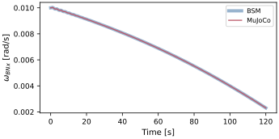
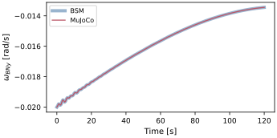
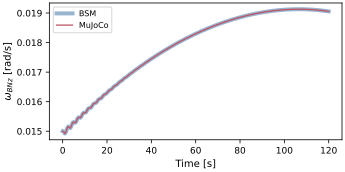
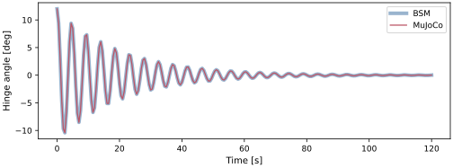
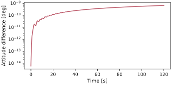

scenarioCompareRwPanels
Third scenario in the dynamics-engine comparison series (see scenarioCompareOrbit for the introduction).
This scenario models a free-floating spacecraft: a central hub carrying three orthogonal reaction wheels (commanded with constant motor torques) and two symmetric solar arrays modeled as torsional spring-damper hinged rigid bodies, initially deflected. With gravity off, the comparison isolates the internal multi-body coupling: wheel reaction torques, panel flexing, and the hub’s rigid-body response.
Matching the two engines requires accounting for how each models the components:
Reaction wheels. Basilisk’s back-substitution balanced C++ Module: reactionWheelStateEffector adds no mass or inertia to the system; it injects only the spin-axis reaction and gyroscopic terms. MuJoCo models each wheel as a real spinning rigid body. The two are made equivalent by folding each wheel’s inertia tensor into the BSM hub inertia, setting the BSM
Jsto the wheel axial inertia, and giving the MuJoCo wheel bodies negligible mass. A non-zero wheel mass would shift the system center of mass differently in the two formulations once the offset panels are attached.Hinged panels. The C++ Module: hingedRigidBodyStateEffector is a torsional spring(
k)-damper(c) hinge with the panel center of mass a distancedfrom the hinge axis. The equivalent MuJoCo construction is ahingejoint with matchingstiffnessanddamping, the child body’s center of mass offset by-dalong its local x-axis (the effector’s sign convention), and a matching inertia tensor. The positive-x root frame is rotated by 180 degrees about z so both arrays extend outward and their hinge axes are mirrored.
The hub attitude is compared with the principal rotation angle of the relative direction
cosine matrix, as in scenarioCompareTorque. The MuJoCo scene is run with
highOrderAttitudeIntegration enabled so the hub quaternion is advanced at the
integrator’s full order, matching BSM’s MRP attitude order.
The script is found in the folder basilisk/examples/dynamicsComparison and executed
by using:
python3 scenarioCompareRwPanels.py
Illustration of Simulation Results
The hub angular velocities from the two engines lie on top of one another as the wheels spin up and the panels oscillate.



The panel hinge angles match between the two engines through the damped oscillation.

The cross-engine hub attitude difference remains near \(10^{-11}\) rad for this eleven-degree-of-freedom system. The small positive wheel mass required by MuJoCo sets this nominal floor; reducing that bookkeeping mass lowers the difference further.

Runtime cost
The optional local benchmark reports the wall-clock cost of propagating this system
with each engine as the median of five measured trials after one discarded warm-up.
Model setup is excluded. Both the absolute times and speedup are specific to the
machine and build.
Generate the optional local CSV with
make -C docs comparison-runtime-tables; see
scenarioCompareOrbit for the benchmark requirements and interpretation.
Next comparison: scenarioCompareFlexPanels increases the number of flexible degrees of freedom and measures runtime scaling.
- scenarioCompareRwPanels.buildBSM(dt, tf, recordDt, record=True)[source]
Build the back-substitution hub-wheel-panel simulation without propagating it.
- Parameters:
dt (float) – integrator time step [s]
tf (float) – final simulation time [s]
recordDt (float) – recorder sampling period [s]
record (bool, optional) – attach state, wheel, and panel recorders. Defaults to True.
- Returns:
(simulation, outputs, handles).- Return type:
tuple
- scenarioCompareRwPanels.buildMujoco(dt, tf, recordDt, record=True)[source]
Build the MuJoCo hub-wheel-panel simulation without propagating it.
- Parameters:
dt (float) – integrator time step [s]
tf (float) – final simulation time [s]
recordDt (float) – recorder sampling period [s]
record (bool, optional) – attach state, wheel, and panel recorders. Defaults to True.
- Returns:
(simulation, outputs, handles).- Return type:
tuple
- scenarioCompareRwPanels.hubInertiaBSM()[source]
BSM hub inertia: bare hub plus the three folded-in wheel tensors.
- Returns:
3x3 hub inertia tensor [kg*m^2].
- Return type:
numpy.ndarray
- scenarioCompareRwPanels.mujocoModel()[source]
Return the MJCF model: hub, three reaction wheels, two hinged panels.
- scenarioCompareRwPanels.panelRootDcm(hingeX)[source]
Return the root-frame DCM that makes both panels extend away from the hub.
- scenarioCompareRwPanels.plotResults(timeAxis, omegaBSM, omegaMujoco, panelBSM, panelMujoco, attError)[source]
Build the scenario figures.
- Parameters:
timeAxis (numpy.ndarray) – sample times [s]
omegaBSM (numpy.ndarray) – BSM hub-rate history [rad/s]
omegaMujoco (numpy.ndarray) – MuJoCo hub-rate history [rad/s] (or None)
panelBSM (numpy.ndarray) – BSM panel-angle history [rad]
panelMujoco (numpy.ndarray) – MuJoCo panel-angle history [rad] (or None)
attError (numpy.ndarray) – cross-engine attitude error [rad] (or None)
- Returns:
mapping from figure name to matplotlib figure.
- Return type:
dict
- scenarioCompareRwPanels.relativePrincipalAngle(sigmaBSM, sigmaMujoco)[source]
Per-sample principal rotation angle between two MRP attitude histories.
- Parameters:
sigmaBSM (numpy.ndarray) – BSM MRP history, shape
(N, 3)sigmaMujoco (numpy.ndarray) – MuJoCo MRP history, shape
(N, 3)
- Returns:
principal angle per sample [rad].
- Return type:
numpy.ndarray
- scenarioCompareRwPanels.run(showPlots=False, saveJson=False, saveTiming=False, resultsDir=None)[source]
Main function, see scenario description.
- Parameters:
showPlots (bool, optional) – if True, plot and show the simulation results. Defaults to False.
saveJson (bool, optional) – if True, write the comparison metrics to
results/scenarioCompareRwPanels.json. Defaults to False.saveTiming (bool, optional) – if True, measure the BSM-vs-MJScene wall-clock cost of this scenario and write
results/scenarioCompareRwPanels_runtime.csv. Defaults to False.resultsDir (str, optional) – explicit artifact directory. Defaults to the scenario
resultsfolder.
- Returns:
mapping from figure name to matplotlib figure.
- Return type:
dict
- scenarioCompareRwPanels.runBSM(dt, tf, recordDt)[source]
Propagate the hub-wheel-panel system with the back-substitution C++ Module: spacecraft.
- scenarioCompareRwPanels.runMujoco(dt, tf, recordDt)[source]
Propagate the same hub-wheel-panel system with the MJScene.
- scenarioCompareRwPanels.writeJsonSummary(timeAxis, omegaBSM, omegaMujoco, wheelBSM, wheelMujoco, panelBSM, panelMujoco, attError, targetResults)[source]
Write a JSON summary of the comparison metrics to the
resultsfolder.- Parameters:
timeAxis (numpy.ndarray) – sample times [s]
omegaBSM (numpy.ndarray) – BSM hub-rate history [rad/s]
omegaMujoco (numpy.ndarray) – MuJoCo hub-rate history [rad/s] (or None)
wheelBSM (numpy.ndarray) – BSM wheel-speed history [rad/s]
wheelMujoco (numpy.ndarray) – MuJoCo wheel-speed history [rad/s] (or None)
panelBSM (numpy.ndarray) – BSM panel-angle history [rad]
panelMujoco (numpy.ndarray) – MuJoCo panel-angle history [rad] (or None)
attError (numpy.ndarray) – cross-engine attitude error [rad] (or None)
targetResults (str) – directory for the JSON artifact